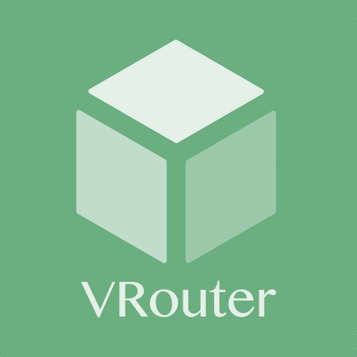

Status
VRouter Mode
Custom Rules
System

Proxy Chains
Proxy Chains
Choose Proxy Chains
Shadowsocks only
Shadowsocks + Kcptun
Server
Remote Port
Password
Encrypt Method
Kcptun Options
Route Mode
Select Route Mode
All
Bypass LAN
Bypass mainland China
Bypass LAN & mainland China
GWF List
Edit
Save and Apply
List Details
blacklist
whitelist
lans
OSX gateway & dns
gateway:
dns:
traffic route
VRouter Status
openwrt version:
br-lan IP address:
VRouter IP address:
shadowsocks-libev version:
kcptun version:
Services
Version
Action
openwrt
demo
demo
shadowsocks
demo
demo
kcptun
demo
demo
dnsmasq
demo
demo
iptables
demo
demo
ipset
demo
demo
SSH Keyfile
regenerate
restart
shutdown